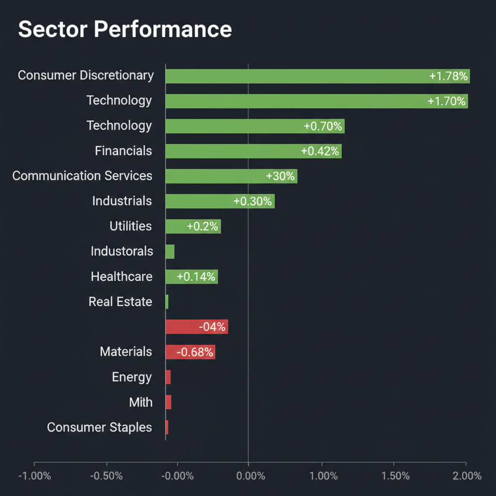
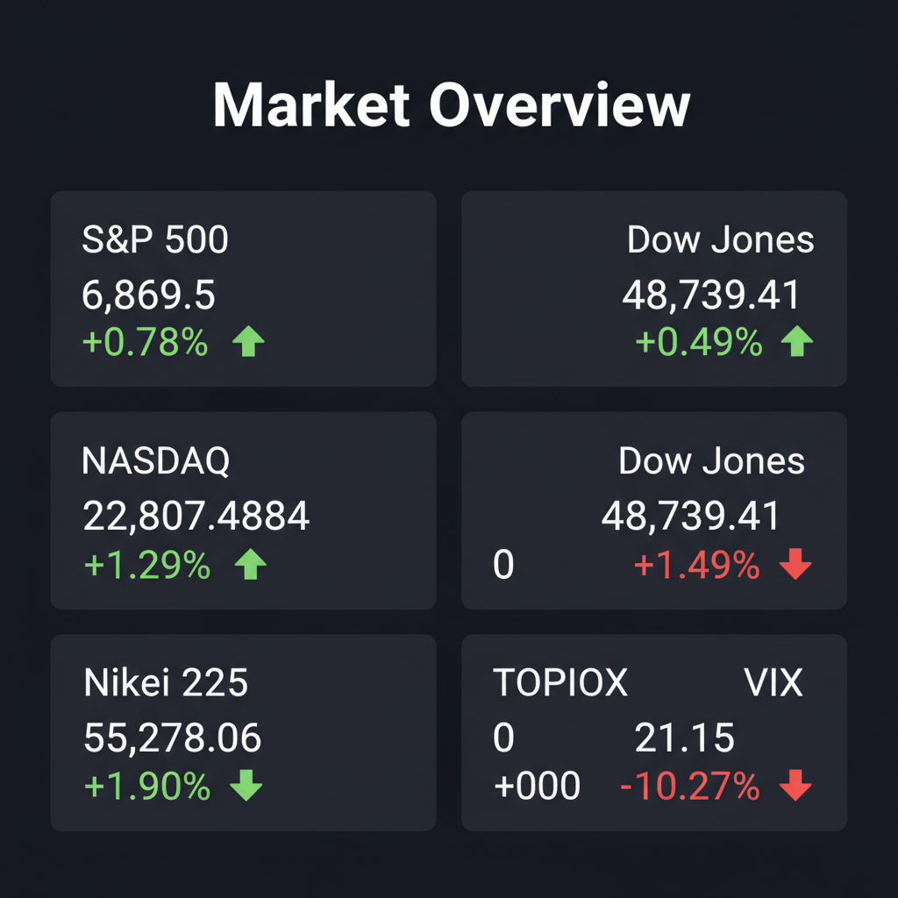

Daily Investment Report - 2026-03-05
Generated: 2026/3/5 17:28:45


1. エグゼクティブサマリー
* 日米の主要指数はAIブーム主導で最高値圏にありますが、VIX指数の高止まりや金利の長期化懸念がくすぶる「警戒を伴う強気相場」です。
* 大型ハイテク株のバリュエーションは限界に近づいており、今後はAIインフラ実装の恩恵を直接受け、かつ財務の強固な「割安な中小型株」への資金ローテーションが最大の投資機会となります。
* 高金利とAI投資の費用対効果（ROI）に対する懸念から、一部利益確定による現金比率の引き上げと、厳格なストップロス管理を伴う「バーベル戦略」の実行を推奨します。
2. 注目銘柄リスト
強気（買い推奨）
*
Modine Manufacturing (MOD) [時価総額: 約$5B]: AIデータセンター向けの液冷システム需要で売上が急増しているにもかかわらず、予想PER20倍台前半とAI恩恵銘柄の中で際立った割安感があります。
*
Celestica (CLS) [時価総額: 約$6B]: ハイパースケーラー向けの通信・ネットワーク機器製造で業績を拡大しつつ、予想PER14〜16倍と安全マージンが確保されている強固なAI関連株です。
*
SWCC（旧 昭和電線HD, 5805） [時価総額: 約1,000億円]: データセンター建設に伴う電力網インフラ拡充の恩恵を独占し、PER約10倍、高ROE・高配当を誇る日本の出遅れバリュー株です。
*
ヘッドウォータース (4011) [時価総額: 約200億〜300億円]: 大手企業との強固なアライアンスを持ち、エッジAIの社会実装で黒字化を達成しながら年率30〜40%の急成長を見せる有望なテンバガー候補です。
*
Innodata (INOD) [時価総額: 約$400M〜$500M]: 巨大テック企業とLLM向け学習データ生成の大型契約を結んでおり、すでにフリーキャッシュフローを創出し始めている市場未認知のAI裏方企業です。
中立（様子見）
*
SoundHound AI (SOUN) [時価総額: 約$1.5B]: 音声AIに特化し圧倒的な売上成長を誇りますが、マクロの高金利環境下では資金調達コストが懸念されるため、テクニカルなブレイクアウトの確認が先決です。
*
マクニカホールディングス (3132) [時価総額: 約2,500億円]: 国内トップのAI半導体商社でPER1桁台と極めて割安ですが、保守的なガイダンスによる株価調整が続いており、底打ちの確認を待つべきです。
*
QPS研究所 (5595) [時価総額: 約400億円]: 宇宙・防衛テーマのど真ん中に位置し政府案件を抱える高いポテンシャルを持ちますが、ボラティリティが激しいため現在のモメンタムを見極める必要があります。
弱気（警戒）
*
巨額のCapEx（設備投資）を伴う大型ハイテク銘柄 [時価総額: 巨大]: AIインフラへの投資額に対し、いつフリーキャッシュフローを生み出すのかというROI（投資対効果）の審査が厳しくなっており、決算やガイダンスのわずかな未達で急落するリスクを孕んでいます。
*
赤字・高負債の中小型グロース株 [時価総額: 各種]: 「Higher for Longer（高金利の長期化）」環境下では、有利子負債の利払い負担が直接的に企業の存続を脅かすため、財務基盤の弱い銘柄への投資は極めて危険です。
3. セクター推奨ランキング
*
1位: 資本財・電力インフラ関連
AIデータセンターの爆発的増加に伴う「電力不足」と「排熱」という物理的制約を解決するため、今後数年にわたる巨大な設備投資の恩恵を最も確実かつダイレクトに受けます。
*
2位: 金融（特に日本）
日銀の「金利のある世界」への政策転換による利ざや改善と、東証のガバナンス改革要請に基づく過去最高規模の自社株買い・増配の恩恵を同時に享受できる、最も確実性の高いセクターです。
*
3位: ヘルスケア
高金利の長期化による景気後退リスクに対する強力なディフェンシブ性を持ちながら、GLP-1（肥満症治療薬）やAI創薬といった破壊的イノベーションを内包しており、攻守のバランスに優れています。
*
4位: 半導体・AIテクノロジー
引き続き市場を牽引する主役ですが、バリュエーションの過熱感と極端な資金集中リスクが高まっており、銘柄の厳格な選別とテクニカル指標を用いたリスク管理が不可欠なためこの位置づけとします。
*
5位: 生活必需品・商業用不動産（回避推奨）
インフレによる価格転嫁の限界により利益率が圧迫されているほか、高金利の長期化が商業用不動産の借り換えコストを直撃し、致命傷となるリスクが高いため、投資エクスポージャーを最小限に抑えるべきです。
4. 今週の注目イベント
* 米国インフレ指標（CPI・コアPCEデフレーター）の発表：FRBの「年内利下げの有無」と高金利長期化の行方を決定づける最重要データ。
* 米国雇用統計および平均時給の発表：労働市場のタイトさとサービスインフレの高止まり圧力を確認。
* AIインフラおよび中小型関連企業の決算発表：巨大テック企業のAI投資が、サプライチェーン周辺企業の実際の売上とフリーキャッシュフローにどう結びついているか（ROIの証明）の確認。
* 日銀の国債買い入れオペ方針および為替介入の動向：日米金利差による円安トレンドの行方と、国内輸出企業の業績（保守的ガイダンス）への影響度測定。
5. リスク要因
*
AI投資の「ROI（投資対効果）ショック」: 巨大IT企業によるAIインフラへの巨額投資が想定通りの利益やマネタイズに直結していないと市場が判断した場合、AI関連株全体のバリュエーションが急速に崩壊するリスク。
*
極端な集中投資の巻き戻し: 指数の上昇がごく一部の巨大銘柄に依存しており、これらがつまずいた際、S&P 500やNASDAQ全体に壊滅的なドローダウンをもたらすテールリスク（VIXの高止まりが示唆）。
*
高金利の長期化とスタグフレーション: インフレの粘着性によってFRBが利下げできず、利払い負担に耐えきれなくなった中小型企業の倒産増加や商業用不動産ローンの焦げ付きが表面化するリスク。
*
円キャリートレードの暴力的巻き戻し: 日銀の利上げと米国のマクロ指標悪化が同時に起きた場合、急激な円高が進行し、日本株を買い支えてきた海外投資家のパニック売りや輸出企業の業績見通し悪化を招くリスク。
6. アクションアイテム
*
現金比率の引き上げ: ポジション全体の30〜40%をMMFや短期国債などの安全資産へ移し、テールリスク発生時（暴落時）に割安な優良株を拾うための「待機資金（ドライパウダー）」を直ちに確保してください。
*
AI恩恵・中小型バリュー株へのローテーション: バリュエーションが極限まで膨らんだ大型ハイテク株のポジションを一部利益確定し、AIの成長を取り込みながらも低PER・高キャッシュフロー・無借金の「中小型インフラ・裏方銘柄（MOD、SWCC等）」へ資金を振り向けてください。
*
厳格なストップロスの設定: テクニカルな過熱感（RSIの買われすぎ等）が散見されるため、新規エントリーは必ずブレイクアウトを確認してから行い、20日移動平均線や直近のサポートラインを割った場合は機械的に損切りするルールを徹底してください。
*
ダウンサイド・ヘッジの構築: VIX指数が20台前半に留まっている現在のうちに、VIXコールオプションの購入や主要指数のプット・スプレッドを構築し、不測のブラックスワン・イベントからポートフォリオを保護してください。